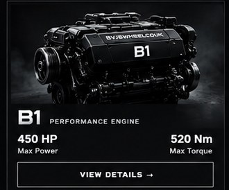
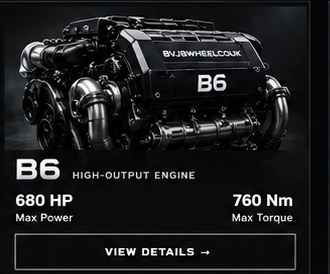
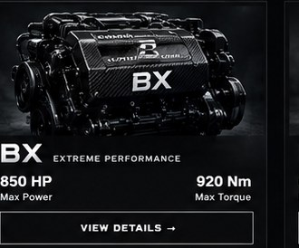
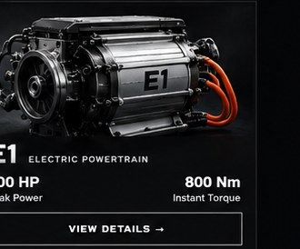
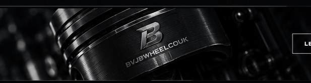

B1 PERFORMANCE ENGINE
450 HPMAX POWER520 NmMAX TORQUE
HIGH-PERFORMANCE ENGINES
BVJBWHEELCOUK is a performance engine company focused on power, precision, reliability and next-generation propulsion technology.
OUR ENGINE LINEUP
A range of high-performance engines engineered for different demands. Built with precision. Designed for more.




OUR VISION
